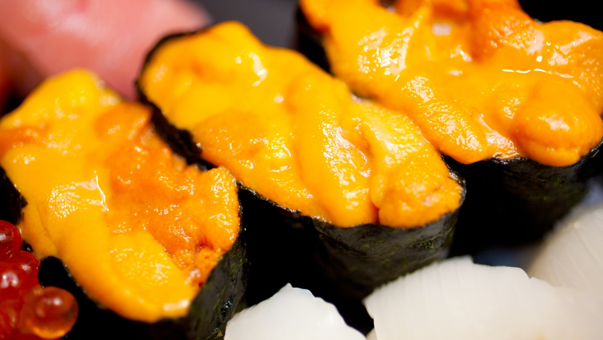
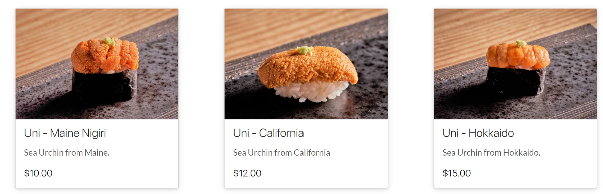
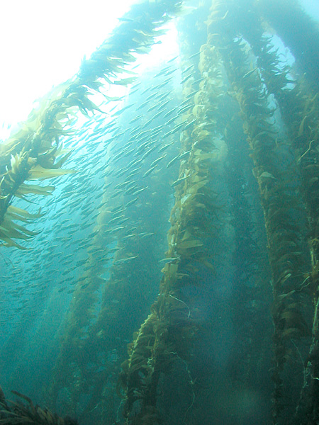
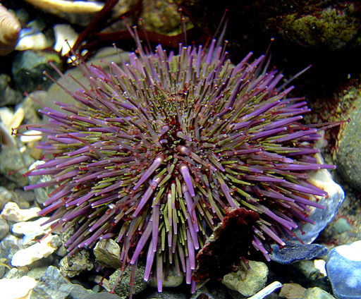

<!DOCTYPE html>
<html lang="en"></html>
<html>
    <head>
        
        <!-- <link rel="stylesheet" href="style.css"> -->

        <meta name="viewport" content="width=device-width, initial-scale=1, shrink-to-fit=no">
        <script src="https://use.fontawesome.com/releases/v5.3.1/js/all.js" defer ></script>
        <link rel="stylesheet" href="https://cdn.jsdelivr.net/npm/bulma@0.8.0/css/bulma.min.css" />
    
        <meta property="og:title" content="Things I miss">
        <meta property="og:description" content="Sea Urchin is a Beloved Sushi Topping in Japan. Find Out the Best State to Try it in the U.S.">
        <meta property="og:type" content="article">
        <meta property="og:image" content="uni_nigiri.jpg">
        <meta name="twitter:card" content="uni_nigiri.jpg">
        <meta name="twitter:creator" content="@hidaka_nao">


        <style>
            body {
                margin:auto;
                padding:50px 10px;
                font-family: 'Open Sans', sans-serif;
                color: #333;
                background-color: rgb(215, 248, 253);
            }
    
            .serif {
                font-family: 'Lora', serif;
            }
            .sans-serif {
                font-family: 'Open Sans', sans-serif;
            }
    
            /* choose a light or dark theme to add to the body tag. */
            .dark-theme {
                background-color: #151515;
                color: #fbfbfb;
            }
            .light-theme {
                background-color: white;
                color:#333;
            }
    
            .header {
                padding-top:20px;
                padding-bottom:20px;
            }
    
            .story-body, .header, .chart-section, .footer {
                margin:auto;
                max-width: 700px;
            }
    
    
            .top-picture {
                margin:auto;
                max-width: 800px;
            }
    
            .footer {
                padding-top:20px;
                padding-bottom:20px;
            }
    
            .chart-section.wide{
                width:100%;
                max-width:1200px;
            }
    
            .chart-section.wide p.chart-title {
                width:100%;
                max-width:700px;
                margin-left:auto;
                margin-right:auto;
            }
            .chart-section.wide p.chart-subhead {
                width:100%;
                max-width:700px;
                margin-left:auto;
                margin-right:auto;
            }
    
    
            /* text styles */
    
            p.kicker {
                font-size:1rem;
                text-transform:uppercase;
            }
    
            .text-center {
                text-align:center;
            }
    
            h1.headline {
                font-size: 3rem;
                line-height: 1.1;
                margin-bottom: 0.25rem;
                margin-top: 1rem;
                font-weight: 800;
            }
    
            h2.subhead {
                font-size: 1.4rem;
                line-height: 2rem;
                margin-bottom:0;
                margin-top: 15px;
                font-weight: 400;
            }
    
            p.body-text {
                font-size: 1.1rem;
                line-height: 1.4;
                margin-top:0;
                margin-bottom:15px;
                color: #333;
            }
    
            h3.section-head {
                font-size:2rem;
                margin:40px 0 10px 0;
                font-weight:700;
                line-height:1.3;
            }
    
            .byline {
                font-size: 1.1rem;
                line-height: 0.75;
                margin-top: 1.5rem;
                font-weight: 500;
                color:#666;
            }
    
            .date {
                font-size: 0.85rem;
                line-height: 1;
                margin-top: 10px;
                font-weight:400;
                text-transform:uppercase;
                letter-spacing:0.5px;
                color:#666;
            }
    
    
            p.note {
                font-size:0.85rem;
            }
    
            /* chart styles */
    
            .chart-section {
                width:100%;
                max-width:700px;
                padding:0px 0px;
            }
    
            .story-body .chart-section {
                padding-top:0px;
            }
    
            
            .chart-row {
                display:flex;
                /* justify-content: space-between; */
                margin-top:0px;
            }
    
            p.chart-title {
                font-size:1.3rem;
                font-weight:700;
                max-width:700px;
                /* margin:0px auto 5px auto; */
            }
            p.chart-subhead {
                margin:0 auto;
                max-width:700px;
                font-size:1rem;
                margin-bottom:15px;
            }
    
            p.chart-label {
                margin:0 0 5px 0;
                font-size:0.85rem;
                text-transform:uppercase;
                font-weight:600;
            }
    
            .chart-row .chart {
                width:100%;
                padding-right:0 ;
                min-width:calc(25% - 15px);
    
            }
    
    
    
            p.chart-source {
                font-size:0.85rem;
                margin:0;
            }
    
    
    
    
            /* photos */
    
            .photo-section {
                padding:30px 0px;
                width:100%;
                margin:auto;
                display:flex;
                max-width:1200px;
            }
    
            .photo {
                width:100%;
                padding-right:15px;
            }
            .photo img {
                width:100%;	
            }
    
            p.caption {
                font-size:0.9rem;
                margin:0;
            }
    
    
    
            /* mobile */
    
            @media (max-width:720px) {
    
                .chart-row {
                    display:block;
                }
    
                .chart-row .chart {
                    padding:0;
                }
    
                .photo-section {
                    display:block;
                    margin-left: auto;
                   margin-right: auto;
                }
                .photo {
                    padding:0;
                }
    
            }
        </style>
       
    
    
    <style>
        .row-container {
          display: flex;
          flex-direction: row;
          width: 100%;
          gap: 2em;
        }
        
        .column-container {
          flex-grow: 1;
        }
        
        @media (max-width: 350px) {
          .row-container {
            flex-direction: column;
          }
        }
        </style>

        <!-- google fonts: Open Sans (sans-serif) and Lora (serif) -->
        <link href="https://fonts.googleapis.com/css?family=Open+Sans:300,300i,400,400i,600,600i,700,700i,800,800i&display=swap" rel="stylesheet">
        <link href="https://fonts.googleapis.com/css?family=Lora:400,400i,700&display=swap" rel="stylesheet">

    <link rel="icon" href="favicon.png">
    <title>Where to Find Uni in the US</title>
        
        <!-- google fonts: Open Sans (sans-serif) and Lora (serif) -->
        <link href="https://fonts.googleapis.com/css?family=Open+Sans:300,300i,400,400i,600,600i,700,700i,800,800i&display=swap" rel="stylesheet">
        <link href="https://fonts.googleapis.com/css?family=Lora:400,400i,700&display=swap" rel="stylesheet">

    </head>
    <body>

        <div class="header">
            <p class="kicker">Things I miss from home</p>
            <h1 class="headline">Sea Urchin is a Beloved Sushi Topping in Japan—Find Out the Best State to Try it in the United States</h1>
            <h2 class="subhead">Golden State could be the best bet but the local urchins are becoming increasingly expensive due to climate change
            </h2>
            <p class="byline">by <a href ="https://naokatoh.github.io/">Nao Kato</a></p>
            <p class="date">March 20, 2022</p>
          </div>

          <div class="top-picture">
            </a>

            <br>
            <br>
            <div class="story-body">
            <p class="body-text serif">Sea urchin, or uni in Japanese, is a popular sushi topping in Japan. This golden delicacy comprises a creamy texture and tastes sweet, with a hint of saltiness. Every time I visit a sushi restaurant in Japan, I definitely order uni nigiri.
            </p>

            <p class="body-text serif">Sea urchins appear tough on the outside, but they are extremely delicate on the inside. You can find them in all of the world’s oceans, but they are difficult to harvest. To consume the edible roe inside, you must crack the hard shell and carefully remove the meat. To maintain creamy consistency, uni meat should not be frozen.</p>
            <p class="body-text serif">Many sushi restaurants here in New York City serve uni with a hefty price tag. Some use  imported lucrative uni from Hokkaido, Japan, which naturally costs a lot of money. But some use domestically landed uni as a topping. </p>
            <p class="body-text serif">For example, <a href ="https://www.ishikawanyc.com/">Sushi Ishikawa</a>, an omakase-only sushi bar on the Upper East Side, offers three types of uni nigiri on its takeout menu. Bite-sized nigiri with Maine’s uni costs $10, and nigiri with Californian uni costs $12. These are surely not affordable, but you can still save money by not choosing the $15 nigiri with imported uni. </p>
             
            <p class="caption">From Sushi Ishikawa's <a href="https://sushiishikawa.speedetab.com/venues/2717">takeout menu</a></p>
            <br>
            <br>
            <b>Where can I find uni?</b>
            <p class="body-text serif">Although uni might seem like an exotic sea creature, there are domestic uni landings in the U.S. So, where is the best place to find good uni?
            </p>

            <p class="body-text serif">I search the data from <a href="https://www.fisheries.noaa.gov/foss/f?p=215:200:2420927741021:Mail:NO:::">National Oceanic and Atmospheric Administration</a>(NOAA) to see which state produce the most uni.</p>
            <br>

            <iframe title="California produces the most uni in the US" aria-label="Bar Chart" id="datawrapper-chart-c0uYT" src="https://datawrapper.dwcdn.net/c0uYT/5/" scrolling="no" frameborder="0" style="width: 0; min-width: 100% !important; border: none;" height="356"></iframe><script type="text/javascript">!function(){"use strict";window.addEventListener("message",(function(e){if(void 0!==e.data["datawrapper-height"]){var t=document.querySelectorAll("iframe");for(var a in e.data["datawrapper-height"])for(var r=0;r<t.length;r++){if(t[r].contentWindow===e.source)t[r].style.height=e.data["datawrapper-height"][a]+"px"}}}))}();
            </script>
            <br>
            <p class="body-text serif">As you can see in the chart above, California produces more than a 7.5million lbs of uni, followed by Maine. According to the California Sea Urchin Commission, kelp forests on the California Coast provide a rich food source for sea urchins, which enhance their tastes. California might be the best place to find fresh and umami-rich uni in the US.     
            </p>

            <p class="body-text serif">Analyzing the Californian data more closely, however, the concern over the sustainability of sea urchins in the region becomes apparent.</p>
            
            <iframe title="Californian uni becomes pricey" aria-label="Interactive line chart" id="datawrapper-chart-qp67m" src="https://datawrapper.dwcdn.net/qp67m/1/" scrolling="no" frameborder="0" style="width: 0; min-width: 100% !important; border: none;" height="433"></iframe><script type="text/javascript">!function(){"use strict";window.addEventListener("message",(function(e){if(void 0!==e.data["datawrapper-height"]){var t=document.querySelectorAll("iframe");for(var a in e.data["datawrapper-height"])for(var r=0;r<t.length;r++){if(t[r].contentWindow===e.source)t[r].style.height=e.data["datawrapper-height"][a]+"px"}}}))}();
            </script>
            <br>
            <p class="body-text serif"></p>According to the Red Sea Urchins Enhance Report 2020 published by the California Department of Fish and Wildlife, the sea urchin landings in the state plunged after 2013. In 2014, the report showed a nearly 40% decrease from the previous year, and the landing has never recovered since then. As a result, the typical ex-vessel price, the amount fishers receive directly for their catch, has increased accordingly.</p>
            <div class="photo-section">
                 
                </div>
                <p class ="caption">Kelp forest and sardines, San Clemente Island, Channel Islands, California: <a href="https://commons.wikimedia.org/wiki/File:Kelp_forest_and_sardines,_San_Clemente_Island,_Channel_Islands,_California.jpg">link</a>, <a href="https://creativecommons.org/licenses/by-sa/2.5">CC BY-SA 2.5</a>, via Wikimedia Commons
                </p>
                <br>
            <b>Climate change affects sea urchins
            </b>
            
            <p class="body-text serif">What made sea urchin fishing so difficult? <a href="https://news.ucsc.edu/2021/03/kelp-forests-norcal.html"> Researchers point out</a> that climate change is one major factor. Due to climate change and El Niño weather events, ocean temperatures surged in the years 2014–2016, <a href ="https://marinespecies.wildlife.ca.gov/red-sea-urchin/the-fishery/#sec-2-3-2">resulting in the lowest landing</a> in history in 2018.
            </p>

            <p class="body-text serif">Ironically, this deterioration of the ocean environment led to the population boom of purple sea urchins, which are generally inedible (Unlike red sea urchins, purple ones produce little meat inside the shell). As purple sea urchins flourished, kelp forests were destroyed, making the ocean environment tougher for red sea urchins to thrive in. Now local restaurants in California, including sushi bars and fine dining, <a href ="https://www.nytimes.com/2021/10/04/dining/california-sea-urchin-kelp-coastline.html">had trouble finding uni locally</a>. 
            </p>
            
            <div class="photo-section">
             
            </div>
            <p class ="caption">purple sea urchins, <a href="https://commons.wikimedia.org/wiki/File:Strongylocentrotus_purpuratus_1.jpg">Kirt L. Onthank</a>, <a href="https://creativecommons.org/licenses/by/3.0">CC BY 3.0</a>, via Wikimedia Commons
            </p>
            
            
         </div>
        </div>
        <br>
        <br>
        

        <p class="footer">This story was done for Data Studio, a class in the Columbia Journalism School. You can view source code for this project in the GitHub repository <a href="https://github.com/naokatoh/sea-urchin">here.</a></p>
   
    </body>
</html>
